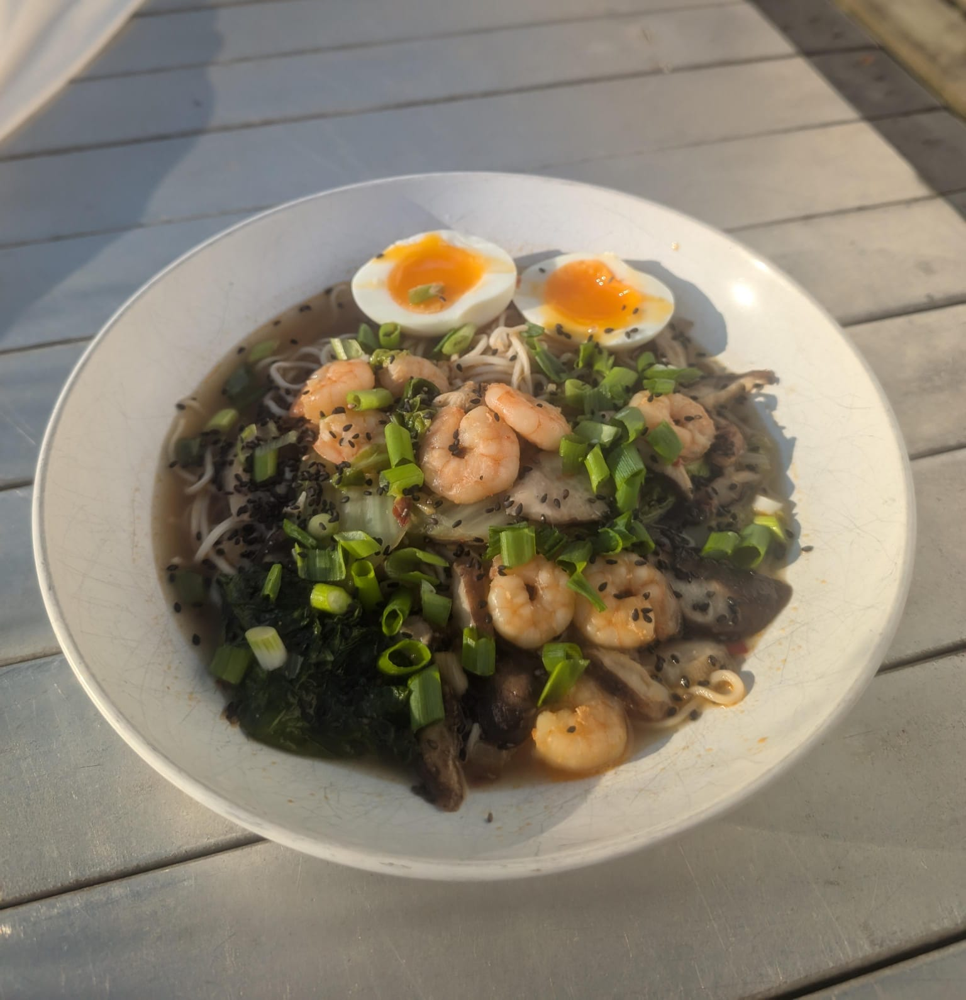

Shrimp Miso Ramen

Description
I always thought i didn't like ramen that much. But for some reason a ramen
place close to my house always appealed to me.
After having finally eaten there, i must admit i have fallen in love with ramen.
When i found out that you could make a simple ramen at home using miso paste
and a few other ingredients, i started experimenting with different recipes.
This is a recipe from thedefineddish that stood out for me. That's why i am including it to this website.
Ingredients
- 2 tbsp avocado oil
- 1/2 tsp toasted sesame oil
- 1/4 cup white onion
- 1 tsp grated ginger
- 2 cloves garlic, minced
- 2 tbsp white miso paste
- 1-2 tbsp chili paste (I use this Sichiun Chili Crisp, but you can use Sambal Oelek)
- 2 tbsp coconut aminos or soy sauce
- 4 cups good chicken broth I use homemade bone broth
- 2 large eggs
- 8 oz uncooked ramen noodles
- 1 head baby bok choy each leaf cut in half, lengthwise into long strips
- 1/2 lb peeled and deveined shrimp
Steps
- Bring a medium saucepan of water to a boil. Meanwhile, heat a separate medium saucepan over medium heat. Add the avocado and sesame oil. When hot, add the onions, ginger, and garlic and cook, stirring, until the onion is tender, about 4 minutes.
- Add the miso and chili paste and continue to cook, stirring, for 2 more minutes. Add the broth and coconut aminos and whisk until well combined. Increase heat and bring the broth to a boil. Once boiling, reduce the heat so that it is simmering.
- By this time, your separate saucepan of water should be boiling. Carefully lower, using a spoon or ladle, the 2 eggs into the water and cook for exactly 7 minutes. Transfer the cooked eggs to a small bowl of ice water to immediately stop the cooking and set aside. Do not drain the water. Using the same boiling water, cook the noodles according to package instructions.
- Add the shrimp and the bok choy to the ramen broth mixture. Cook, stirring, until the shrimp is cooked through and nice and pink and the bok choy is wilted and tender– about 3 minutes.
- Taste the broth and add salt and more chili paste, if desired.
- Place cooked ramen noodles in a large bowl. Using tongs, arrange the shrimp and bok choy around the noodles. Ladle the spicy miso ramen broth over all contents in the bowl. Slice an egg in half and place it on top of the soup.
- Optional– you can add green onion, toasted sesame seeds, or even freshly chopped nori sheets, if desired.